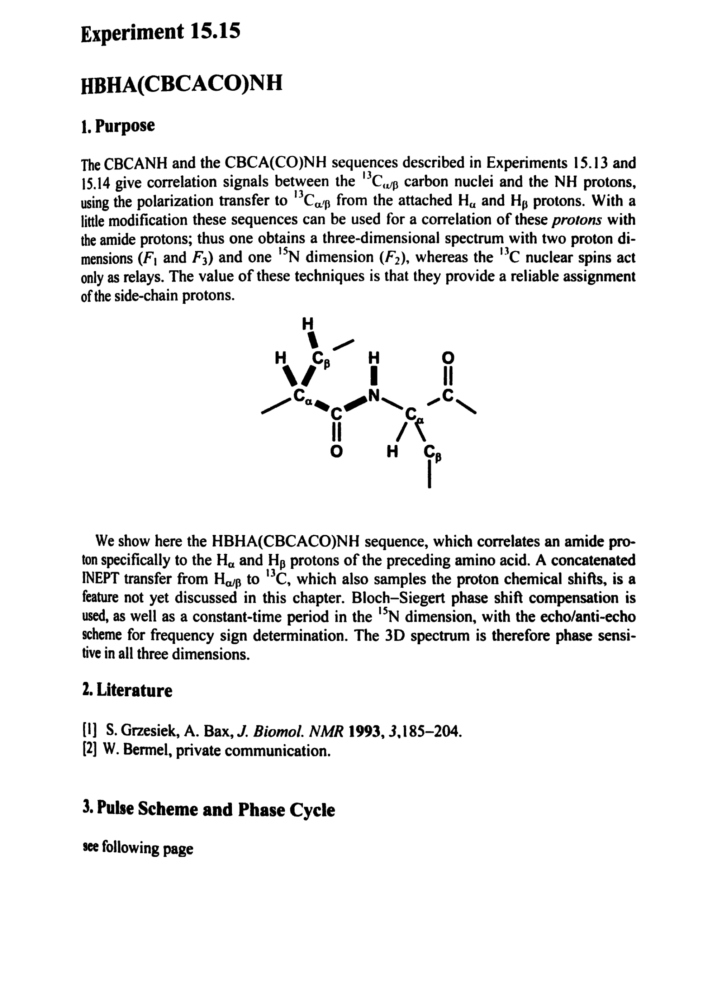
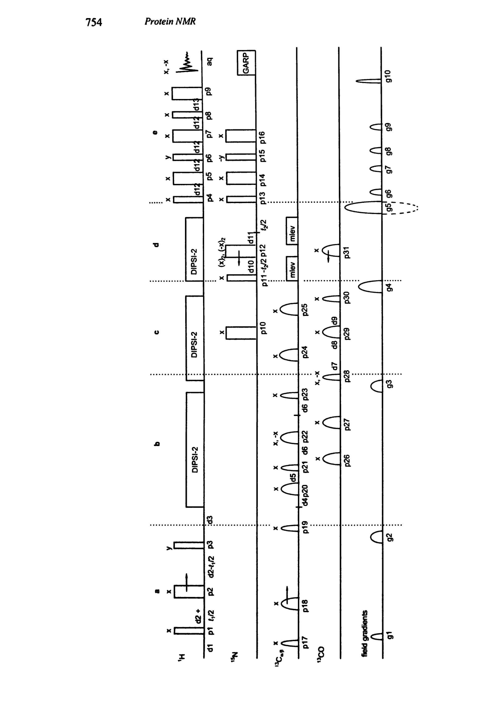
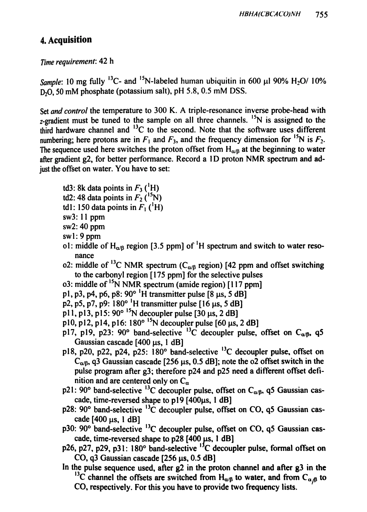
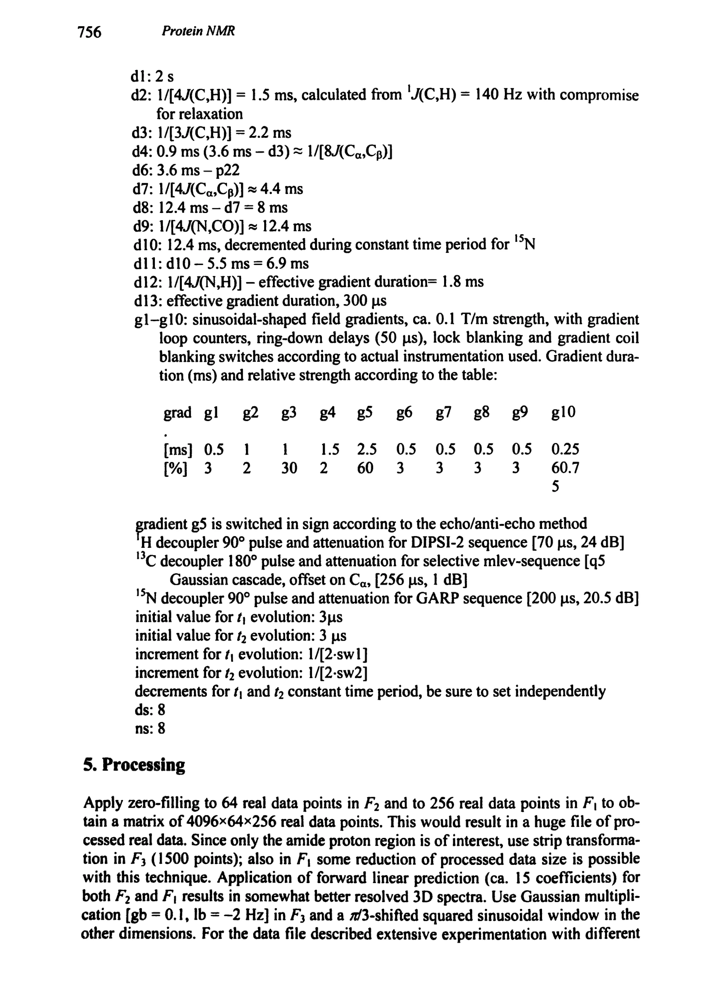
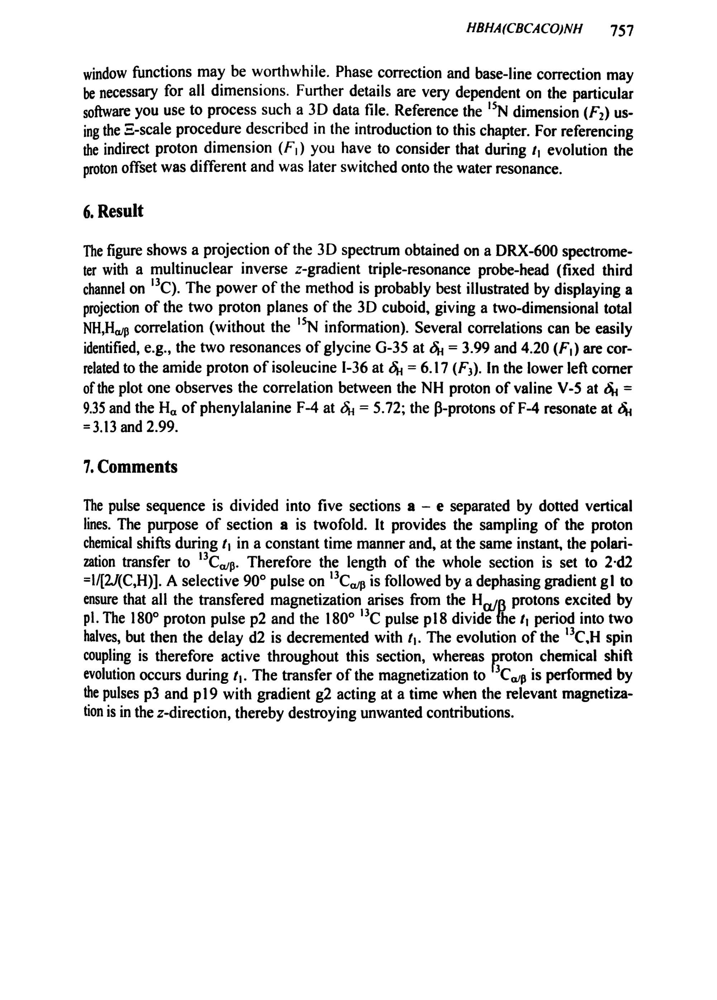
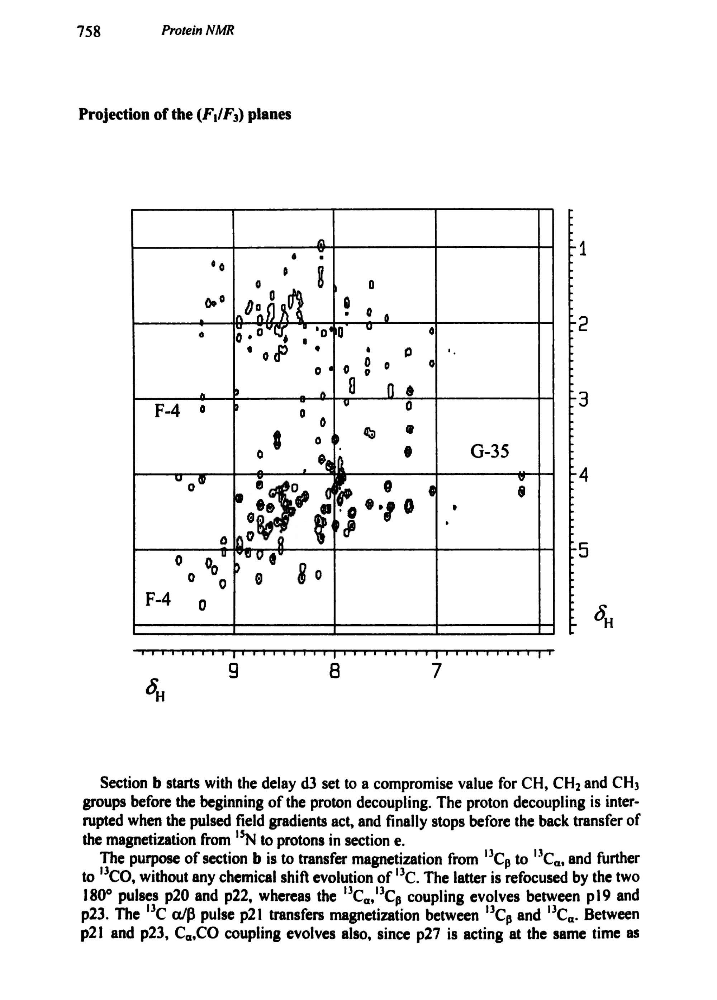
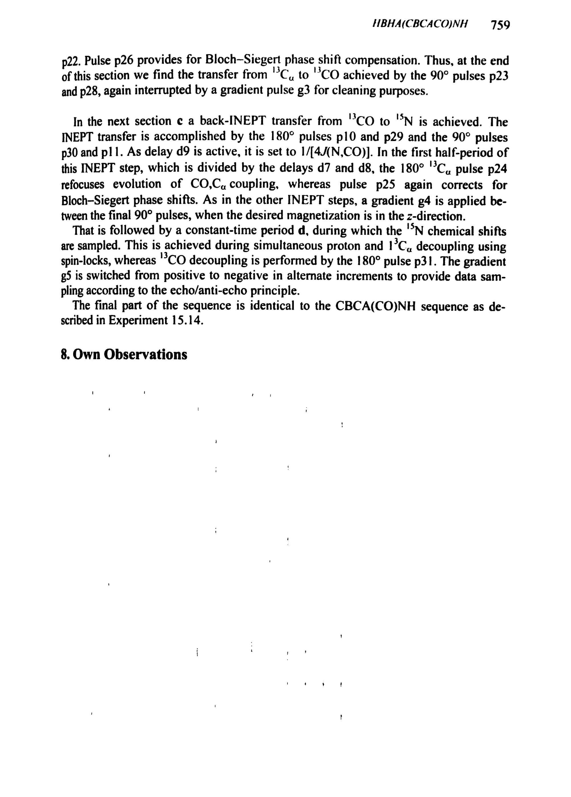

Experiment 15.15
HBHA(CBCACO)NH
HBHA(CBCACO)NH 三维相关实验
PDF 768–774 · 原书 753–759 · Protein NMR







核磁共振实验方法、脉冲序列与谱图实践
Experiment 15.15
HBHA(CBCACO)NH 三维相关实验
PDF 768–774 · 原书 753–759 · Protein NMR






